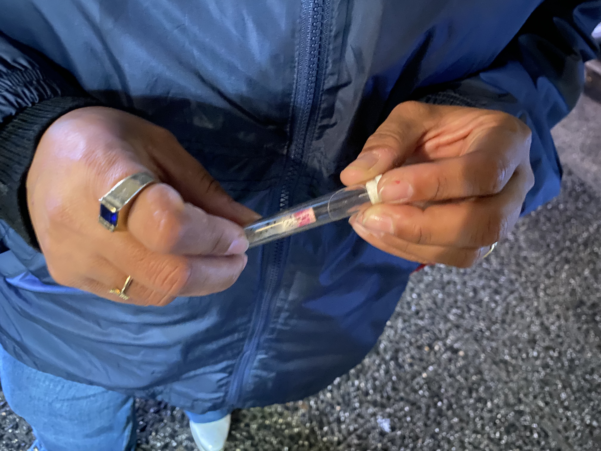

Washington Heights still doesn't have its first legal dispensary. This is why.
Liz C. Lozano
Oct. 06, 2023

While a new call for licenses opened on October 4, Washington Heights, the former epicenter of the industry in the 80s and 90s, still does not have a legal dispensary. The applicants and license holders see various obstacles that prevent Latinos from participating in this industry that reaches 1.2 billion dollars annually in New York City.
The reason is that several applicants face obstacles to opening their dispensaries. Meanwhile some do not have the resources to meet the requirements like having business experience for two years and exclusive control over the company; others deal with the stigma of the industry in the neighborhood, which results in the denial of the members of the community to rent the spaces for dispensaries and offer related services.
It is a paradoxical position, given that Washington Heights, for its geographic location, was the hub for the drug commercialization in the city and to the states of New York, New Jersey, and Connecticut. Despite the lack of demographic information about the licenses, according to the OCM, 29% of participants in the community business roundtables were Latinos, and among the issues discussed are the barriers to opening businesses and education.
In addition, according to the city’s Budget Office, the OCM granted 200 licenses for dispensaries in New York, and the city will allocate $20.8 million to the Department of Small Business between 2024 and 2027.
things to know about why Washington Heights doesn't have its first legal Cannabis dispensary
1. Alleged poor fund management from DASNY
The Cannabis Social Equity Investment Fund secured $200 million to support justice-involved individuals with a CAURD license. However, the Caurd Coalition, expressed their collective frustration with the fund, asking the resources were immediately seized.
2. The stigma over the Cannabis industry
Several sources see as an obstacle the stigma over the industry of Cannabis. For Joel Abreu, Chair of business development, Community District 12, it pushes the licensees to the illegal market, ”the community still refuse to rent locals or work with the licensees.”
3. Washington Heights: the 80's and 90's drug Hub
.png)
Due to its location, Washington Heights was the hub for drug commercialization in the city and the states of New York, New Jersey, and Connecticut. Unsurprisingly, the neighborhood reported 1.3 million arrests between 1990 and 2021, most of them to black and Latino people.
4. Education: key against the industry's stigma

According to experts like Daniela Vergara, an expert from Cornell University “It is necessary to educate the communities about the benefits of the plant” Accordingly, social organizations have been creating spaces for networking, education, and sharing information.